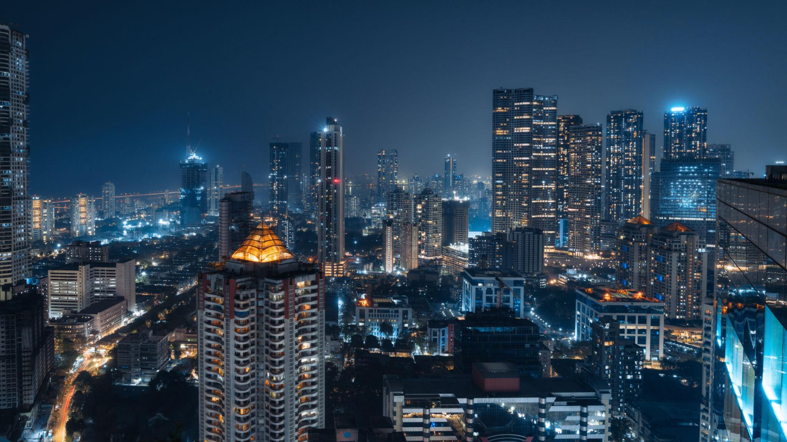
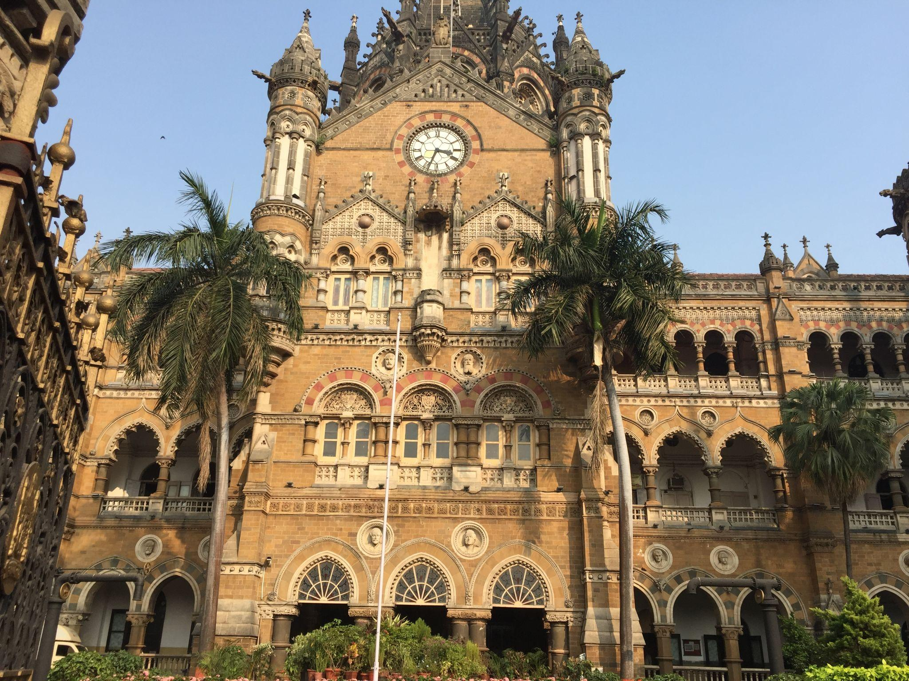
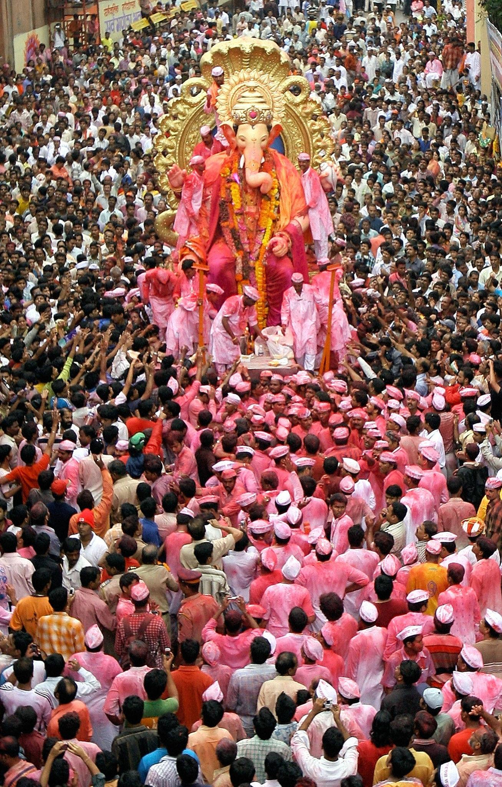
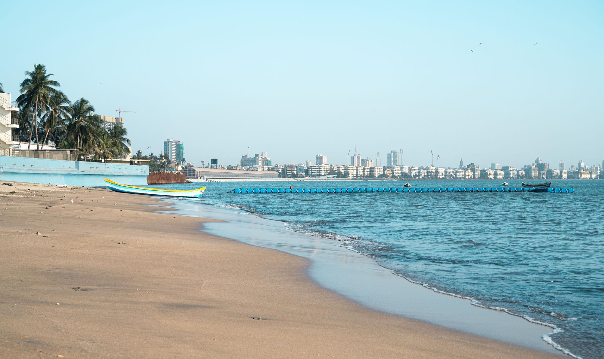
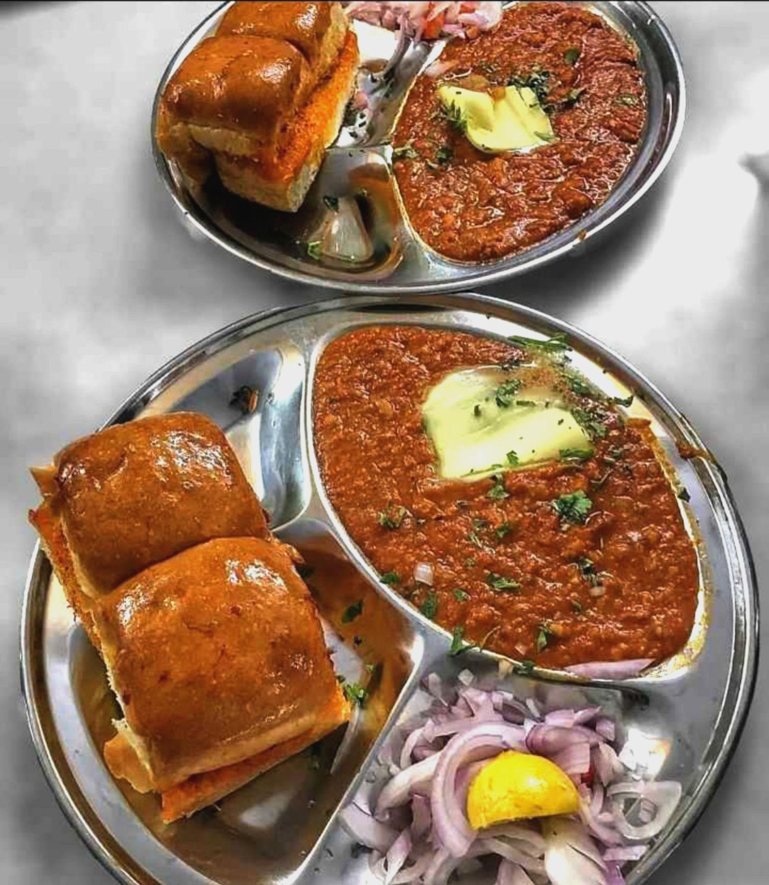
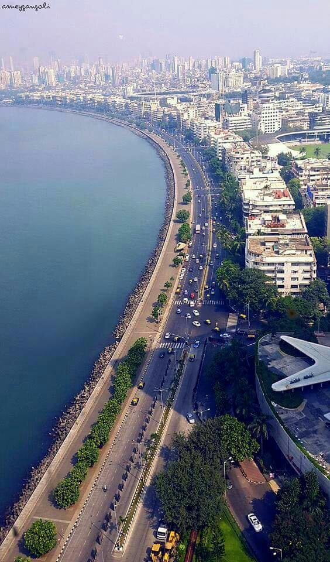
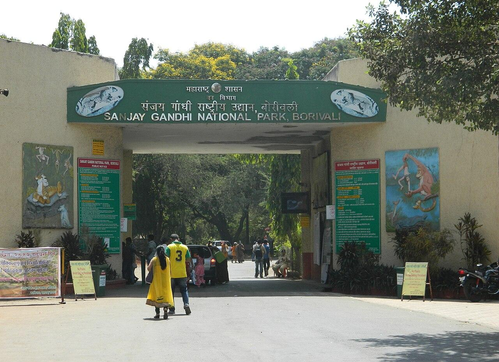
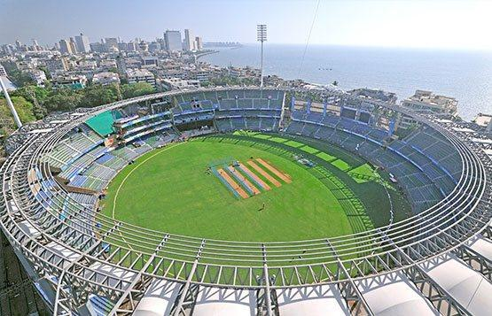

About

As the capital of Maharashtra, the city spans 603 square kilometers. It has a metropolitan population exceeding 20 million people and serves as a major draw for migrants across India seeking new opportunities.
- Location:Situated on the west coast of India along the Arabian Sea, about 150 km northwest of Pune.
- Famous as:The financial and entertainment capital of India, the home of Bollywood, and a global hub for business and cinema.
History

Originally a cluster of seven islands inhabited by the Koli fishing community, Mumbai was successively ruled by indigenous empires and the Portuguese before being gifted to the British in the 17th century. Massive reclamation projects combined the islands, turning the area into a powerful maritime and economic hub that served as a central base for the Indian independence movement.
- Ancient Roots: Inhabited since the Stone Age by the indigenous Koli fishing community, the islands of Mumbai later thrived under the rule of early empires like the Maurya Empire, the Satavahanas, and the Vakatakas
- Key Rulers:: Passed through the hands of the Silahar dynasty, the Yadavas of Devagiri, the Gujarat Sultanate, and the Portuguese before being given to the British Raj as a royal dowry in 1661.
- Historic Sites:Home to the UNESCO-listed Elephanta Caves, the ancient rock-cut Buddhist Kanheri Caves, the historic Banganga Tank, and several colonial-era coastal defense structures like the Worli Fort and Bandra Fort
Culture

Mumbai is a vibrant melting pot of religions, languages, and festivals. While major holidays like Diwali and Christmas are celebrated, the 10-day Ganesh Chaturthi festival is the city's grandest and most spectacular event. It is also the global home of Bollywood, India's Hindi film industry, and features numerous art galleries, museums, and theaters.
- Main Festivals:Celebrates Ganesh Utsav on a grand public scale, alongside major events like Diwali, Navratri, Christmas, Eid, and the historic Kala Ghoda Arts Festival.
- Traditional Arts:Home to diverse cultural forms including Koli folk dances from the fishing community, vibrant Marathi theatre, contemporary art showcases, and the world-famous Hindi cinema industry (Bollywood).
- Language:Marathi is the official language of the state, but the city features a unique blend of languages where Hindi, English, and a local dialect called "Bambaiya Hindi" are widely spoken by everyone.
Tourism

The city seamlessly blends ancient history with modern glamour. Top attractions include the iconic Gateway of India, the historic Chhatrapati Shivaji Maharaj Vastu Sangrahalaya, and the ancient, UNESCO-listed Elephanta Caves.
- Chhatrapati Shivaji Maharaj Terminus (CSMT): An iconic, UNESCO-listed Victorian Gothic railway station that stands as a stunning symbol of colonial architecture [2] and serves as the beating heart of Mumbai's commuter network.
- A network of ancient 5th to 8th-century rock-cut cave temples [3] located on a nearby island, dedicated to Lord Shiva and featuring the world-famous, massive three-headed Sadashiva sculpture.
- A striking, 26-metre-tall triumphal arch built out of basalt stone on the waterfront, designed to commemorate royal British visits and known today as the city's most famous landmark.
Famous Food

Mumbai boasts a legendary culinary scene, ranging from high-end global dining to iconic street food. Popular favorites include Vada Pav, Pav Bhaji, Bhel Puri, and authentic seafood. The city's cosmopolitan heritage is further highlighted by its historic Irani cafés.
- Famous dishes:Renowned for Vada Pav (a spiced potato fritter inside a soft bread bun), Pav Bhaji (a thick, spicy vegetable gravy served with buttery bread), and Bombay Duck (a crispy, shallow-fried local fish coated in semolina).
- Local Specialty:Famous for Bhel Puri (a tangy, crunchy puffed rice street snack mix), savory Frankies (spiced wraps created in the city), and Mani's or Irani cafe specials like Bun Maska served alongside sweet, aromatic cutting chai.
Economy

Recognized as India's Economic Capital, the city drives the nation's wealth. It generates over 6% of India's GDP, handles the majority of the country's maritime trade, and is home to the Bombay Stock Exchange and the headquarters of major multinational corporations.
- Key Industries:Driven by the massive financial services sector, including banking, insurance, and the stock market, alongside major entertainment industries like Bollywood, information technology, and busy maritime trade ports.
- Main Crops:Dominated by coastal fishing catches and local coconut cultivation in suburban village pockets, while the surrounding metropolitan region produces Alphonso mangoes, rice, and fresh green vegetables.
Environment

Situated on a low-lying peninsular plain, Mumbai is surrounded by natural harbors and beaches. Despite being a concrete jungle, the northern part of the metropolis contains the expansive Sanjay Gandhi National Park, which preserves local wildlife and tropical forests within city limits.
- Climate:Experiences a tropical wet and dry climate with high humidity year-round. Temperatures stay warm, averaging between 25°C to 30°C, and the city receives extremely heavy rainfall from June to September during the southwest monsoon season.
- Key Rivers:The main natural lifelines flowing through the city are the Mithi, Oshiwara, Dahisar, and Poisar rivers, which empty out directly into the Arabian Sea.
- Protected Areas:Home to the expansive Sanjay Gandhi National Park, a major protected urban forest within city limits that hosts a large population of leopards and contains the ancient Kanheri Caves.
Sports

Cricket is a religion in Mumbai, deeply ingrained in the city's identity. The metropolis is home to the prestigious Wankhede Stadium and regularly produces legendary national and international cricketers.
- Traditional Sports:Heavily centered around Kushti (traditional wrestling) in historic city vyayamsalas (gyms), alongside immensely popular, fast-paced Kabaddi and Kho-Kho tournaments organized across local neighborhoods (chawls).
- Focus:Main venues include the iconic Wankhede Stadium and Brabourne Stadium, which host major international cricket matches. The city's athletic focus is deeply rooted in cricket, field hockey, football, marathon running, and horse racing at the historic Mahalaxmi Racecourse.